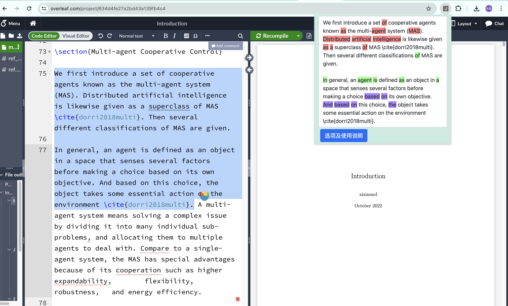
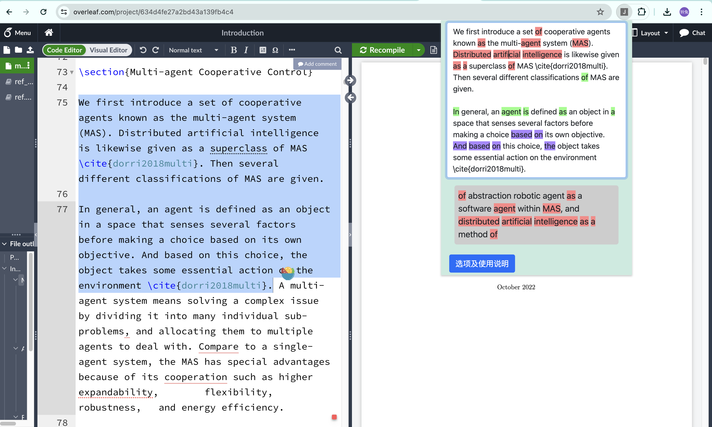

由于查重网站按次计费，而时常我们改写的结果仍然会导致大量的重复，写作时进行反复降重并反复查重耗时费力，本程序旨在通过与一些可能重复的文本进行比较并标明重复位置以辅助写作者降重。以下说明使用方法：
1. 将可能与写作内容存在重复的文本加入到本地查重库（可直接导入PDF或添加纯文本）
2. 选中待查重的文本并打开本插件的弹窗（可通过快捷键打开），已选择的文本会自动查重并显示在弹窗中

3. 不同颜色表示与不同文本重复的部分，点击带有颜色的文本可显示本地查重库中重复文本的原始信息

4. 可直接在弹窗中修改，插件每隔一定时间（此时间通过“编辑后延迟刷新时间（毫秒）”修改）进行一次查重并显示新的结果
5. 为方便切换不同的本地查重库，可导出和导入已准备好的文献查重库，文件默认名为Jpreset.json